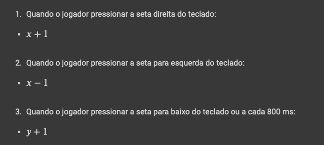

Parte I - Construindo o Jogo
Tabuleiro
Tetrominos

Desenhando
Para desenhar e animar o jogo utilizamos o canvas.
Uma ferramenta criada para delimitar uma área de renderização dinâmica de gráficos
No nosso caso estamos utilizando o contexto bidimensional já que esse destina-se à criação de imagens em duas dimensões.
Ele segue um sistema de eixos cartesianos x e y, cuja origem é no canto superior esquerdo da área de criação.
Assim a coordenada x cresce da esquerda para direita e y de cima para baixo.


Jogadas

Translação
Rotação
Para realizarmos a rotação podemos pensar em mais alguns conceitos da algebra linear:
Ao invertermos as linhas da matriz transposta podemos alcançar a rotação que sejamos